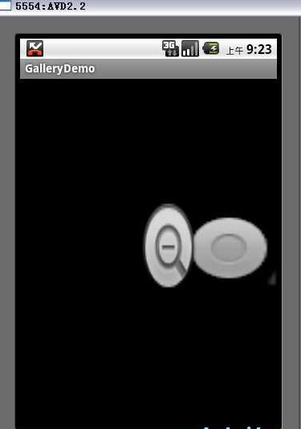
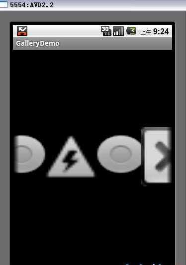

简单的手指拖动图片，图片滑来滑去显示应用
前言
我们现在在随便一个手机上用手指在屏幕上滑来滑都可以去拖动图片，其实在 Android 里这很简单，下面我就给大家具体讲解一下。
思路
我们首先需要Gallery这个对象，俗称画廊对象，大家都知道画廊吧，在现实生活中画廊里面放置的都是一个个画家画的具体的画，画廊有了，还需要什么呢？还需要的就是一幅幅具体的画了，具体的画其实就是ImageView对象了。如何把画好的画填充到画廊上呢？这里就需要一个填充器了，就是BaseAdapter。
实现步骤
一：布局文件编写
1.1：布局文件main.xml
<?xml version="1.0" encoding="utf-8"?><LinearLayout xmlns:android=http://schemas.android.com/apk/res/android
android:orientation="vertical"
android:layout_width="fill_parent
android:layout_height="fill_parent">
<Gallery
android:id="@+id/gallery
android:layout_width="fill_parent
android:layout_height="fill_parent" />
</LinearLayout>
二：代码文件编写
2.1：MainActivity.java
import android.app.Activity;import android.content.Context;
import android.os.Bundle;
import android.view.View;
import android.view.ViewGroup;
import android.widget.BaseAdapter;
import android.widget.Gallery;
import android.widget.ImageView;
public class MainActivity extends Activity {
@Override
public void onCreate(Bundle savedInstanceState) {
super.onCreate(savedInstanceState);
// 加载布局文件main.xml
setContentView(R.layout.main);
// 通过findViewById()方法得到Gallery对象
Gallery gallery = (Gallery) findViewById(R.id.gallery);
// 添加一个ImageAdapter并设置给Gallery
gallery.setAdapter(new ImageAdapter(this));
}
public class ImageAdapter extends BaseAdapter {
private Context context;
// 使用系统的图标图片作为图库源
private int[] imageids = { android.R.drawable.btn_minus,
android.R.drawable.btn_radio,
android.R.drawable.ic_lock_idle_low_battery,
android.R.drawable.btn_radio, android.R.drawable.btn_dialog };
// 构造函数 此构造函数只有一个参数就是要存数的Context
public ImageAdapter(Context c) {
this.context = c;
}
// 得到已定义的图片的总数量
public int getCount() {
return imageids.length;
}
// 得到目前容器中图片的数组
public Object getItem(int position) {
return position;
}
// 得到目前容器中图片的数组ID
public long getItemId(int position) {
return position;
}
// 取得目前欲显示的图片view，传入数组ID使之读取成图像
public View getView(int position, View convertView, ViewGroup parent) {
// 创建一个ImageView对象
ImageView imageview = new ImageView(context);
// 设置图片给ImageView对象
imageview.setImageResource(imageids[position]);
// 重新设置图片的宽高
imageview.setScaleType(ImageView.ScaleType.FIT_XY);
// 重新设置Layout的宽高
imageview.setLayoutParams(new Gallery.LayoutParams(120, 120));
return imageview;
}
// 根据距离中央的位移量，利用getScale()返回view的大小
public float getScale(boolean focused, int offset) {
return Math.max(0, 1.0f / (float) Math.pow(2, Math.abs(offset)));
}
}
}
运行效果如下
我们用手指从右向左拖动

